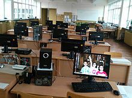
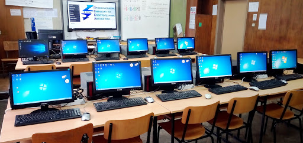

| Състезания |
 |
| В ПГЕА усилено работи клуб „Електроника и роботика“. Учениците получават подкрепа от Робо Лига България, изразяваща се в предоставяне на роботи от различен клас. Учениците участват в следните дисциплини – Следване на линия, 2D лабиринт, 3D лабиринт, Мини Сумо и Свободен стил. Състезанията са национални и се провеждат два пъти в годината: есенен и пролетен кръг. От 2017/2018 година клубът се преименува на "Kirov Robotics" и смени ръководството си. Като за учебната 2018/2019 година има следните класирания в различни състезания:
-Робо Лига България - Свободен стил (старша възраст) - 1во място -Национално състезание по приложна електроника "Мога и зная как" - регионален кръг - 2ро място -Национално състезание по приложна електроника "Мога и зная как" - републикански кръг - 2ро място |
|
| Стипендии |  |
| -при успех над 5,50, се получава стипендия за отличен успех
-Стипендия по болест се изплаща когато ученика има хронични заболявания. -Социална стипендия - в случай че семейния доход, разделен на членовете на семейството е по малък от минималната работна заплата -Стипендия при смърт на родител -ВАЖНО: Всеки ученик може да взима само една от тези стипендии, не всичките |